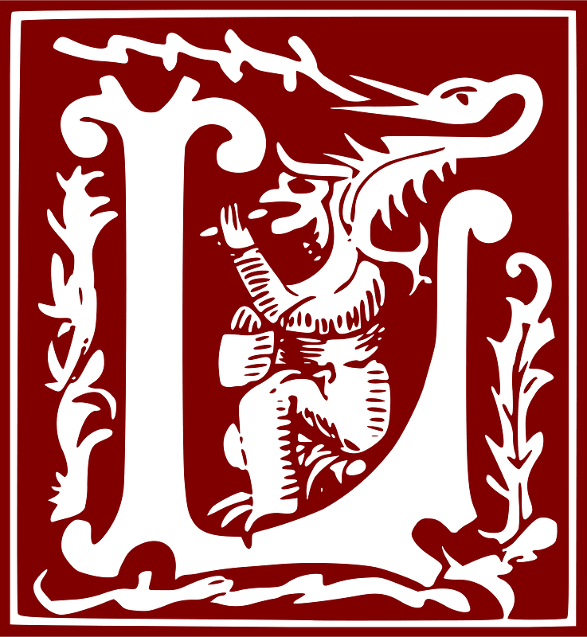
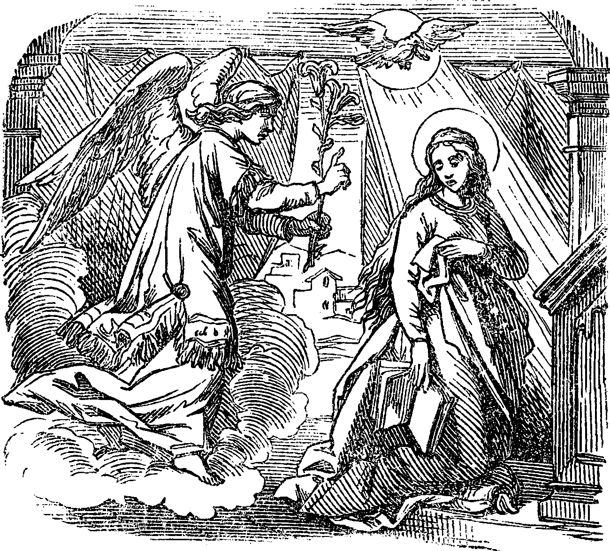

’ANGE du Seigneur ap-porta l’annonce à Marie.
℟. Et elle a conçu du Saint-Esprit. Je vous salue Marie.
℣. Voici la servante du Seigneur.
℟. Qu’il me soit fait selon votre parole. Je vous salue Marie.
℣. Et le Verbe s’est fait chair.
℟. Et il a habité parmi nous. Je vous salue Marie.
℣. Prie pour nous, sainte Mère de Dieu.
℟. Afin que nous soyons rendus dignes des promesses du Christ.
Prions : Que votre grâce, Seigneur, se répande en nos cœurs ; par le message de l’Ange, voud nous avez fait connaître l’incarnation du Christ votre Fils. Conduisez-nous, par sa passion et par
sa croix, jusqu’à la gloire de la résurrection. Par ce même Christ, notre Seigneur.
Ainsi soit-il.
